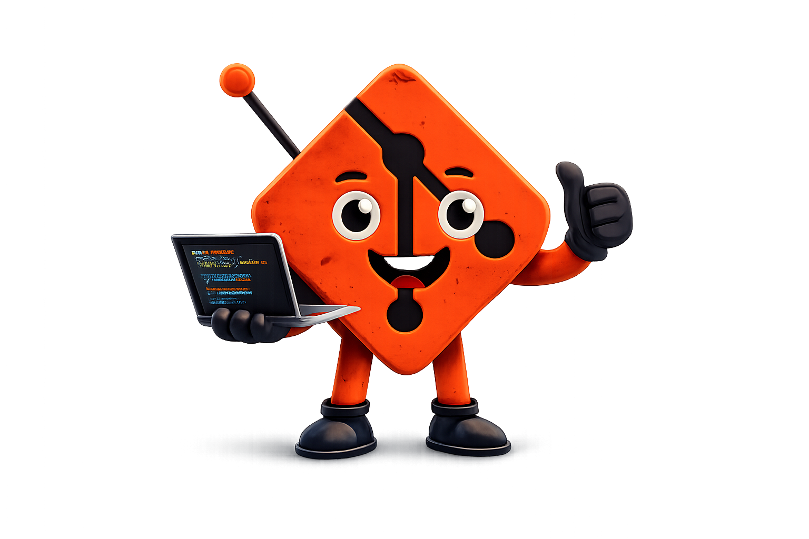

Entenda como salvar, versionar e colaborar em projetos de forma profissional. Aprenda os principais comandos Git usados no dia a dia por desenvolvedores e ganhe mais segurança ao programar.
Começar agora Saiba mais
Git é o sistema de controle de versão mais usado no mundo. Com ele, você pode trabalhar em equipe sem conflitos, reverter mudanças quando necessário e manter um histórico completo do seu projeto.
Seja você iniciante ou experiente, dominar Git é fundamental para trabalhar em qualquer projeto de desenvolvimento moderno. Empresas de todos os tamanhos utilizam Git diariamente.
Ver comandos Fale conoscoComandos rápidos para começar — copie com um clique e teste no seu terminal.